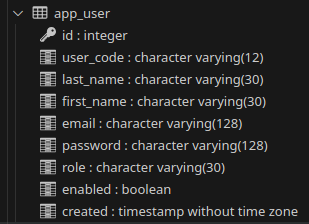

go install github.com/fraenky8/tables-to-go@latestDatenbanktabellen als Go-Struct abbilden
15 Oktober 2023
Standardvorgehen, um Datenbank-Daten mit Go zu lesen oder zu schreiben ist die Benutzung des "database/sql" Package. Selects werden in der Regel, d.h. wenn es sich nicht um einen einzelnen Spaltenwert handelt mit einem "struct" oder einer Liste von "structs" verarbeitet.
Ein "struct" bildet dabei jeweils eine Datenbanktabelle ab. Es ist mühsam und fehleranfällig, "structs" für jede Tabelle manuell zu pflegen.
1. Tables-To-Go
Tables-To-Go kann structs reverse aus einem vorhandenen Datenbankmodell erstellen. Dies funktioniert z.B. mit MySQL, Postgres und (über einen im Repository beschriebenen Umweg, d.h. Klonen des Repositories und Ausführen von " make sqlite3" auch) mit SQLite.
2. Setup
Tables-To-Go lässt sich mit diesem Befehl installieren:
Nach der Installation mit "go install" oder "make sqlite3" steht eine ausführbare Datei "tables-to-go" im Verzeichnis "~/go/bin" bereit"
3. Verwendung mit Postgres
Die structs für alle Tabellen einer Datenbank lassen sich für Postgres (dem Standardfall) mit folgendem Befehl erstellen
tables-to-go -h <ip der Datenbank> -d <DB-Name> -u <Benutzer> -p <Passwort> -pn <Go-Paketname>oder mit weiteren Parametern
tables-to-go -v -t pg -h <ip der Datenbank> -port <DB-Port> -d <DB-Name> -u <Benutzer> -p <Passwort> -pn <Go-Paketname> -pre <Prefix> -suf <Postfix> -of <Ausgabeverzeichnis>4. Verwendung mit SQLite3
Die structs für alle Tabellen einer Datenbank lassen sich für SQLite3 mit folgendem Befehl erstellen
tables-to-go -v -t sqlite3 -d <..Pfad/zur/Datenbank/dbname.sqlite> -of <Ausgabeverzeichnis> -suf <Postfix>5. Beispiel
Die Tabelle "app_user" in einer Postgres-Datenbank sieht folgendermaßen aus:

Der Befehl:
tables-to-go -v -t pg -h localhost -port 15432 -d mp3 -u psqladmin -p postgres -pn model -suf _entity -of modelerzeugt das "struct" "AppUserEntity" im Unterverzeichnis "model" (Das Verzeichnis muss bereits existieren).
package model
import (
"database/sql"
"time"
)
type AppUserEntity struct {
ID int `db:"id"`
UserCode string `db:"user_code"`
LastName string `db:"last_name"`
FirstName sql.NullString `db:"first_name"`
Email string `db:"email"`
Password string `db:"password"`
Role sql.NullString `db:"role"`
Enabled sql.NullBool `db:"enabled"`
Created time.Time `db:"created"`
}